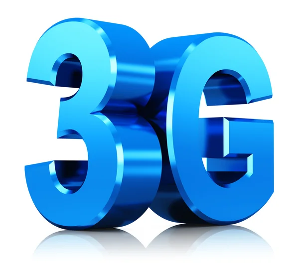

Generasi ketiga (3G) merujuk pada teknologi jaringan seluler yang menawarkan peningkatan signifikan dalam kapasitas dan kecepatan data dibandingkan dengan pendahulunya, yaitu 2G. Diluncurkan pada awal tahun 2000-an, 3G memungkinkan pengguna untuk mengakses layanan data berkecepatan tinggi, seperti internet, multimedia, dan video telepon. Teknologi ini membawa perubahan revolusioner dalam pengalaman berkomunikasi, memungkinkan pengguna untuk melakukan aktivitas online dengan lebih efisien di perangkat seluler mereka. Kelebihan 3G melibatkan kemampuan untuk mentransfer data dengan kecepatan yang lebih tinggi, memungkinkan pengguna untuk mengakses berbagai aplikasi dan layanan yang membutuhkan bandwidth yang lebih besar. Meskipun telah digantikan oleh teknologi generasi selanjutnya, seperti 4G dan 5G, 3G tetap memegang peran penting dalam menyediakan konektivitas dasar di beberapa wilayah yang masih mengandalkannya.